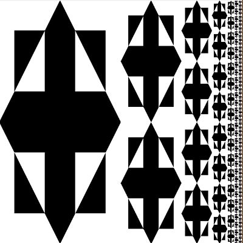

Hello World.
I am Jinjia, aspiring to be a coder and working on my first ever personal website. My journey was
kickstarted when I took a introductory class to computer science with Python as the "language" of
instruction. One problem, in particular, really introduced me to the highs and lows of programming.

We had just started learning about loops, iterations and recursions, and
were taught that for every recursion, there was a way to code the same algorithm in iteration. The
algorithm for this mosaic seemed short and sweet, but the hours and fatigue I fought through to complete
this was unforgettable. I remembered coding through the night, and even thinking of the solution while
I was trying to fall asleep! Eventually, I was still in deep thought and decided to give sleep a miss,
and finally completing it at dawn. Looking back, this was one of those nights when I decided that I should
make coding a part of my life. (Of course, I could have reached the solution in shorter time if I had rested with a refreshed mind!)
Since then, I looked for online resources to learn other languages on my own.
Tackling front-end web development with HTML, CSS and JavaScript is my current hustle, and this website is the fruit
of my learning. You can find projects that I have been working on from the "Projects" tab. The "Life" tab consists of
details about my personal life, including a website (still in progress) that covers the backpacking trip I made in 2017 to China & Korea.
In Progress
Python
CSS (Bootstrap, Flexbox, Grid)
HTML
JavaScript (Vanilla, ReactJS)
Student Life
Graduated with B.Soc.Sci. (Hons., Distinction), Psychology
National University of Singapore
Student Exchange Programme in Beijing, China
Peking University
Overseas Internship in Hangzhou, China
KidsGlobal International
Service Learning Trip to Champassak, Pakse, Laos
Project EMP
Delving into IT
Data Office, Human Resources Management Information & Systems
Public Service Division
Provide support for release of HR data warehouse, ODIN. Dashboard making on Tableau. Mastery of parameters, filters, calculated fields, marks.
Roboto Academy
Assist in coaching students from primary to secondary level on basic programming concepts through the use of tools like Scratch, micro:bit and Dash.
Projects

A game of Hangman in Vanilla JS
View